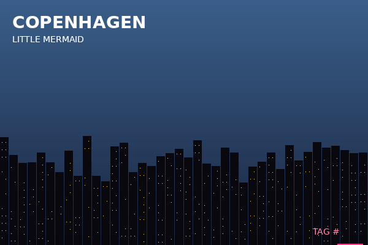
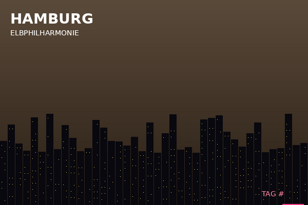
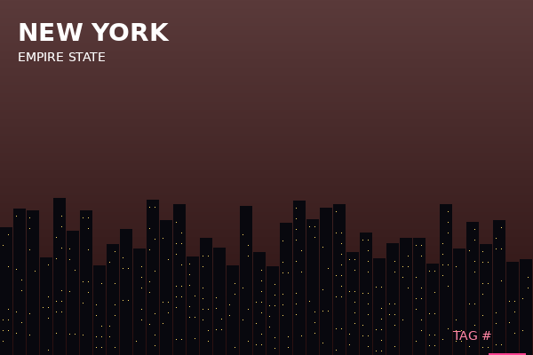
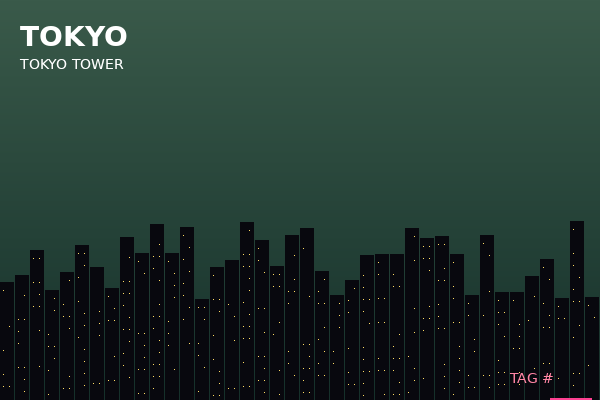

§ 1 · BIOGRAPHICAL NOTES
Subject was apprehended August 14, 2009, at the rail yard adjoining the Copenhagen central freight terminal, in the act of applying spray-paint to the side of a tanker car designated for export. The tanker carried experimental stock for an undisclosed third party. Apprehension was unofficial. No charges filed. Subject was instead offered an alternative arrangement.
Under the terms of that arrangement, Subject's likeness, mannerisms, and personal tag were licensed in perpetuity to the studio for a property then in development. Subject's contractual silence has been maintained for fifteen years. The character became globally recognised; the person became a placeholder.
[handwritten margin note, page 4 of original file:] "We told him he could keep running. We didn't say where to."
§ 2 · TOUR LOG — IMAGES
Recovered from Subject's personal device, encrypted volume /private/run/. Six images, no captions, no timestamps in EXIF (stripped). Locations identified informally by the recovery analyst.




Analyst note: Subject's published "World Tour" deployments are well-documented (publicly available marketing schedule). The order of images above is the order of recovery, not chronological. Two of the locations shown are NOT in the public tour list. Reasoning unclear.
§ 3 · AUDIO ARCHIVE
Four files recovered from the same volume. Three are studio scratch / ambient takes routinely produced during recording sessions. One is unaccounted for.
QA flagging in this file means the clip was reviewed and reverted from production. Unflagged clips are either pre-review or unprocessed.
§ 4 · DECODE TERMINAL
If the Subject left a message, this terminal was provided to recover it. Submission requires both a 6-character routing key and a 12-character audio key. Failed submissions are logged and rate-limited.
§ 5 · APPENDIX — QA UTILITIES
Internal helper. Originally written by QA to spot-check submissions during testing. [deprecated 2024-03; left in place pending audit]